Are You Insulated?
By Edward Harland
December/January 1995
The easy way to make your house warmer in winter, cooler in summer, and much quieter year round.
Few people know just how much more comfortable and how much money and energy could be saved by a comprehensive insulation upgrade. Oh, sure, it nags at you every time you get a $200 oil or gas bill, but will the time expended in buttoning up the house (to the extent that a rank amateur is capable) really pay off? Consider this: The newest generation of what used to be called superinsulation-plastic, metal, and recycled material composites-makes fiberglass look antiquated by comparison, is quicker and far less hazardous to install, and has the capacity to reduce your home's heating and cooling load by 50 percent. For the average home, that's a $1,500 savings on wood, coal, oil, or gas that you can put right back into your pocket. This is particularly true if you have a home that has not benefited from an upgrade in the past 10 years. Such an upgrade, which in most cases you can do on your own, will not only have a huge impact on your energy expenditure, but also will make your home feel more solid and quiet in the bargain.
Installing insulation in existing buildings poses challenges. However, the question is no longer whether it makes sense to insulate or even to some extent how much to insulate. The question now is simply how to find the most effective way of insulating each element of our home to the highest standard that we can afford. In the next few pages, I'll tell you how to do just that.
There is one important concept that is worth bearing in mind: Total heat produced in a building equals total heat lost to the outside. All insulation does is slow down the rate of heat loss, so that less heat is required to maintain the same internal temperature. When we insulate our houses to a high standard, we not only conserve the heat from our heating appliances, but also from all the other sources of heat, such as heat from cookers, lights, computers, and our bodies. These by-product sources of heat can then play a more important role in heating, and do the entire job themselves at certain times of the year.
Materials
Choosing the most suitable material for each situation, as you might imagine, is an important part of insulating, though much of the decision will be made for you depending upon the locally available materials. Most are not suitable for every application; for instance, some deteriorate with moisture. It is also important that we choose materials that do least harm to the environment. However, to some extent all materials used for insulation are ecological because in most cases during their life cycle they will prevent many times more pollution than their manufacturing has caused.
There are three major material types:
(1) Those derived from living resources should be the first choice ecologically and include all timber products (including timber itself), cellulose fibers, cork granules, softboard and wood-wool. Others include wool products, compressed straw slabs, and kapok.
(2) Those derived from mineral resources include rock wool, vermiculite granules, perlite, fiberglass and foam glass.
(3) Those materials produced by chemical synthesis from petrochemicals include the plastic foams: polystyrene, polyurethane, and phenolic foam.
These varieties of material can take several forms:
(1) Batts or blankets, sold in bundles or rolls, are used in floors, walls, and ceilings that have exposed studs, joists, or rafters.
(2) Loose fill (sold in bags) is either poured or blown into already finished walls and ceilings, and some attic spaces.
(3) Rigid board (sold in sheets) is used on basement walls and exterior sheathing.
(4) Foam, which can only be installed by a contractor, is blown into finished walls.
Insulating Priorities: Where to Get the Best Returns
In order to plan a program of insulation we need to know the relative effectiveness of different measures so that we can tackle projects that Hive the most benefit first:
(1) The Roof
Heat rises and tends to be lost more easily at the top of a building than at the bottom. The roof is also open to the sky (where heat is lost through radiation), and the roof usually has the thinnest construction. It makes an excellent place to start work, especially if your insulation is either weak or nonexistent.
(2) Walls and Windows
Walls have the largest surface area open to the elements in the home, and thus account for the largest heat loss of all. Walls should take second priority. Window insulation can be undertaken at any time, but it makes sense to do this work in conjunction with wall insulation as you work from room to room.
(3) Ground Floor and Basernent
Insulating the floors of our houses is not as important as you might think (because the ground itself provides good insulating properties), but it is certainly an option to be considered.
(4) Landscaping
There is the opportunity to moderate some of the effects of the weather through the use of planting.
The insulation process itself will have three major effects, and you'll have to keep them in mind before you begin.
(1)Weathersproofing/rain-proofing
Keeping rainwater from penetrating a house is pretty basic, and when we insulate this becomes more important than ever, because the outside of the building will then become colder in winter. As a result, timber and brickwork III-C more likely to take tip water, which in some circumstances can lead to frost damage, material deterioration, and increased conduction. In addition, much of the insulating material is hidden away and can absorb large quantities of water before what is happening becomes apparent. It is therefore important to keep an eye on the roof tiles, guttering, and downpipes, and to repair and clear them (especially after storms and leaf falls). A pair of binoculars is excellent for checking places on your roof that are difficult to see because of dormers or rooflights.
(2) Draft-proofing
It is quite common for a house to have anything from 1 to 3 square feet of air leaks-that's when you add up all the gaps around doors, windows, service entry points, and the possible hidden airways up through the middle of your house that you may not know about. These unwanted drafts will vary according to many factors, such as how well you secure your windows or doors. The problem is that wherever they occur, they are continuous throughout every winter day and night. Just think how concerned we are about a leaking tap, yet heat leaks are far more costly. Lack of draught-proofing can account for 10 to 30 percent of your energy expenditure, and it is of little use insulating; without paving attention l it. However, to prevent creating an oversealed environment, it should be carried out in conjunction with increased attention to ventilation.
(3) Ventilation
Ventilation has several important functions: to supply fresh, unpolluted air for inhabitants; to exhaust water vapor and pollutants; to both provide the necessary oxygen for combustion and to vent the products of it. Finally, it is important to the preservation of many materials, particularly timber and timber products, ensuring they arc sufficiently aired to keep their moisture content controlled. This means that not only should you make provisions for controlled ventilation of the interior of a house, but also, where necessary, the ventilation within the roof, wall, and floor construction. In most cases your house has been designed to allow tier this ventilation. Condensation is a sure sign that there is either insufficient ventilation or insulation. If you notice any condensation after you have insulated, track down the likely ventilation problem, and provide the necessary air flow only where you need it, using mechanical extract fans in bathrooms and kitchens, vents or ducted air to any combustion with a controlled flue, trickle vents at windows, and proprietary vents in clapboard, tiles. eaves and underfloor brickwork.
The Roof
Is your rue,( space empty with bare rafters and ceiling joists or is it habitable and already lined? Depending on your particular situation, you need to choose the headings below that apply to you.
Unlined or Uninhabitable Attics
Unlined attics can very easily be insulated by simply pouring a loose fill insulation material, such as cellulose fiber, between the joists and leveling off to whatever depth of insulation you decide is practical. (See illustration below.). Here is often the only place where it is possible to superinsulate and lay as much depth as desired. People have laid as much as two feet of cellulose fibers in an open roof space, but depending on how long and cold your winters are, between 6"and 18" should be ample. Follow the simple rule of laying what fits and only what you can afford.
It is important to check how your roof space is ventilated and to ensure that any air passages are kept clear. This may mean in some cases fitting boards or proprietary plastic inserts at the eaves to hold the insulating material back. Any water pipes protruding above the insulation need to be lagged with closed cell plastic tubes and any storage tank wrapped or boxed with blanket type or rigid sheet insulation. For fire safety reasons all insulation should be kept 3" away from heat and light fixtures.
Lived-in Attic Space or Lined Lofts
If your attic space is habitable or is going to be some day, then it is the rafter zone that needs insulating. There are three choices: Insulation can be installed either below, between, or above the rafters (See illustrations above.).
Below the Rafters
If the rafters are open and unplastered, it is a simple matter to place rigid sheet insulation on the inside and fix a board finish underneath. This method of insulation reduces the room height and width. This in itself may inhibit the thickness of insulation and the minimum thickness to be considered should be about 2". Sheets of plastic foam insulation can either be laid between cross-battened timber, machined to the same thickness as the insulation, or simply pinned in position before fixing boarding. In the former the plasterboard or matchboarding can be fixed to the cross battening and in the latter, fixings need to be made through the insulation to the joists beneath. I have personally used 3" polystyrene insulation, which has the advantage of being highly water resistant and as a result, no vapor barrier is required. Plastic insulation cuts easily with a sharp, long-bladed knife.
Additional insulation can be fitted between the rafters as well. However, it is important not to fill the whole depth of the rafters to allow proper air circulation to them. This may well determine the thickness of the insulation possible. There is an advantage if at least one of the insulation boards is covered with a layer of aluminum foil to add to the effectiveness of the insulation.
If your attic space is already lined, the insulation can be placed directly on the underside of the lining. Alternatively, your roofing tiles or shingles may need replacing, and in that case insulation could be added between the joists while the roof is stripped. You could do this by either laying rock-wool or similar material between the rafters, remembering to leave the 2" gap between the insulation and the roofing felt, or, if the rafters are shallow, to use rigid board plastic foam insulation with a high R-value.
Between the Rafters
This is the most usual place to install the insulation. However, your rafters may not be deep enough to accommodate a reasonable thickness of insulation with the required 2" air gap above. To increase the thickness a timber lath can always be fixed to the underside of the rafters as shown in the illustration.
For example, you may have a rafter of 4" depth and you want to add 3" of insulation board, then it would be possible to do this if you attached a lath of about 1". Otherwise the procedure is very similar to that above.
Above the Rafters
This particular option is only worthwhile if you are having your roof renewed. It is also the most complicated method, because it almost certainly involves some redesign of the eaves to allow for the added thickness of insulation. The basic principle is to strip the roof of tiles and tile laths; to lay a rigid insulation board on top of the rafters; and lay a building board or roofing laths on top of this to take the tiles or shingles. If you are choosing to lay a thicker layer of insulation than can be accommodated by the existing roof, it may be necessary to obtain the advise of someone knowledgeable in the building business. It is treatment of the eaves and gable end that requires special attention. Another important point to watch for in all these cases is the ventilation of the timber rafters. If there is any doubt that there will be sufficient airflow, then it is advisable to install a vapor-proof barrier of polyethelene sheeting just behind the finish boarding to prevent water vapor traveling through from the inside.
Wall Insulation
Wall construction is predominantly timber frame, and the simplest way of insulating this type of wall is by blowing cellulose fibers into the cavities between the inside and the outside lining or boarding. Achieving this is likely to be the single largest fuel-saving measure for most houses, and if you rent a blowing machine and do the job yourself, the payback time can be reduced significantly. Lumberyards sell cellulose fibers, and many will loan you the blower for nothing if they are in a reasonable mood. If you decide that these fibers make sense, you need to make a decision on whether to gain access from the interior through 2" holes cut in the plasterboard or through the exterior by removing some clapboards or shingles.
To guard against the cellulose becoming damp, the exterior boarding should have vents and interior walls painted with vapor-barrier paint, such as an oil based paint. Another option is to remove the existing interior finish boarding and install rigid sheet insulation or baits between the studs before replacing the internal finish. This procedure allows you to install a polyethylene vapor barrier between the insulation and studwork and internal boarding, but requires a major renovation investment in time and money.
Brick Walls
There are three possible ways to insulate masonry or brick walls:
(1) Insulating the internal cavity
(2) Insulating externally-the most effective form of insulation
(3) Insulating internally-the most involved
Cavity Wall Insulation
If your home is one with unfilled cavities you have the easiest job of all to improve the insulating qualities of your walls with little internal or external disruption. It is advisable to have this work carried out by a professional contractor-it usually takes less than a day for the insulating material to be injected into the walls from the outside. Phone your local Chamber of Commerce for information on contractors able to carry out this work.
External Insulation
The most effective place to install your insulation is on the exterior of your building. It keeps the whole fabric warm and dry, and the contained walls provide the thermal mass that can even out extremes of hot and cold. However, this is also a job most often carried out by specialized firms. The biggest design problems occur at the windows and, here again, it is important to have design advice and not necessarily leave it to the contractors who are installing the insulation.
Internal Insulation
There are many situations where it may not be appropriate to place the insulation on the outside of a building, such as where the brickwork or stonework is particularly attractive. In these cases there is no alternative to installing the insulation on the inside of the external walls. This can be done in two ways:
(a) attaching rigid board insulation to the existing interior wall, then covering it with plasterboard (some plasterboard has insulation already attached);
(b) building a new stud wall against the inside face of the masonry and cutting rigid sheets of plastic foam or fiber batts to fit between the studs, and then covering the studs and insulation with plasterboard. You need to remove and replace architraves around doors and windows need to be removed and replaced after relining.
If you decide to undertake the internal insulating of your external walls, then you have a choice as to whether you do it all at once (probably the cheapest way if you are using a contractor) or install the insulation room by room as you redecorate.
Window Insulation
You can insulate windows at any time, however, it makes sense to do this work in conjunction with wall insulation. It is useful to understand first the reasons why the technique is so effective.
The main principle behind double glazing is trapping an insulating layer of air or other insulating gas between two panes of glass. The ideal gap is between 1/2 and 3/4 of an inch. Increasing this gap does not significantly improve its insulating properties, only the soundproofing. Decreasing this gap leads to a falling off in insulating value. 'there are three other ways of increasing the effectiveness of double-glazing:
Improving the greenhouse properties of the glass-The normal properties of clear glass include its transparency to sunlight and its ability to reflect the longer infrared wavelengths of heat from inside. This reflective quality that keeps the heat in can be further enhanced by the use of special coatings on inner panes.
Improving the insuiating properties of the frame-The insulating properties of the frame, and sashes themselves become important and can help increase the overall insulating effectiveness and prevent condensation arising from thermal bridging. Solid metal frames conduct heat quickly and should be avoided unless they contain a thermal break. Vinyl frames have the advantage of low maintenance in the short run, but their long-term durability is unknown. Wooden frames provide the best all-round ecological solution if the timber is well seasoned in the fiat place and is kept protected.
Improving the insulating properties of the gap between panes - The insulating layer between the two panes of glass can be improved either by creating a vacuum between the two layers of glass or by substituting a light gas, such as argon or krypton, for the existing air. Producing a vacuum is an ideal way of cutting out the conduction between the two panes of glass. in practice this is difficult to attain acid is only possible in factory sealed glass envelopes that are expensive and limited in size. However, factory sealed units containing argon or krypton are becoming more easily available.
There are three ways to add double glazing to existing housing:
Secondary glazing - This is a second pane of glass or plastic, either fixed or openable, that is installed oil the inside of the existing window. Increasingly these systems have come to look like a second internal window.
Sealed units-These consist of two panes of glass that are sealed in a workshop or factory with the use of a separating edging strip. These units can then be used to replace the panes of glass in the sashes or fixed windows. Thicknesses of these vary from about 1/2 " to 1", giving a choice of the thinner units to fit narrower rower sash or mullion width.
Replacement windows - These are whole windows that replace the existing window, frame and all, incorporating sealed units.
The three most important considerations are:
(1) the state of the existing windows and whether double glazed units can be incorporated into the existing sashes;
(2) the aesthetic or architectural quality of the existing windows;
(3) cost.
Your windows may be in a poor state of repair, being partly rotten, if wooden, or corroded if metal. The decision whether to replace them completely or repair can be a difficult one, but ultimately the expenditure and savings in terms of energy, money, time, and materials need to be balanced up. Although almost any timber window can be repaired (and this should be the preferred option), it is sometimes the most sensible step to start again, if you can considerably increase the insulating value of the window by doing so. What will often be the deciding factor is the aesthetic quality of the existing windows compared with that of any replacement.
There are other ways of improving a window's insulating properties.
Curtains call be made more effective insulators. You can use thicker material, or even a quilted material with an insulating filling; add a reflective covering to send heat back into the room; and make sure that escaping down-drafts between the window and the curtains are reduced by:
(1) using a valance that fits well around the top of the curtain;
(2) ensuring that the sides of the curtain connect as well as possible to the sides of the frame and to themselves in the middle;
(3) providing a shelf or sill for the seam of the curtains to lie on; and
(4) ensuring that if a radiator is fitted below the window, the warm convection current from the radiator does not go behind the curtain. (Either tuck the curtain behind the radiator or install a small shelf.)
Blinds call be made to fit in slides at the side of windows, so they are easier to seal than curtains. The bottom of the blind can simply rest on the sill and a simple flap can contain the top. Blinds, being more rigid than curtains, can more easily be treated with special coatings or incorporate a thin insulating film.
Shutters can be designed to be insulated and tight-fitting, and hinged so that they fold back and to the side when not in use. These will almost certainly need to be specially made.
Pop-in insulation panels. are a cheap and effective solution. A ridged sheet of insulation, preferably one that is a sandwich of aluminum foil and card (in order to protect the foil), is cut to size and fitted to exactly the inside of the frame, and the side facing the room is covered with fabric. The main disadvantage is the extra work required to place them each time you wish to insulate the window. One solution is to have them hinged at the top so they can swing up out of the way and be attached to the ceiling by a hook.
External security and insulation blinds. are made first and foremost for security. However, they have the advantage that they are placed on the outside of the house and so do not interfere with internal arrangements of rooms. They would be worth thinking about if you are having external insulation fitted, if you have a real security problem in your neighborhood, or if the facade of your house has little aesthetic significance.
Ground Floor/Basement Insulation
The ground itself acts an excellent insulator below about two feet; its insulating effect is similar to being attached to a neighboring house. Floor insulation thus takes a lower priority compared with roofs and external walls. Traditionally ground floors have been made from boarded joists supported by masonry sleeping walls. This has the essential function of airing the timber used in their construction and, incidentally, ventilating away any radon seeping up from the ground. This means that the temperature of a well ventilated underfloor crawl space in high wind can be closer to that of the outside. Insulating just below the floorboarding between the timber joists becomes a beneficial measure to undertake.
In general at ground level there are two different floor constructions to consider: suspended floors and solid floors. In the case of a solid floor then it will be necessary to relay the whole floor in order to install insulation. The expense of this will hardly be worth it unless the floor is in poor repair. Because of the insulating properties of the ground, insulation is only required at the edges of a solid floor. If a solid floor feels cold it is more likely to be the effect of the floor covering than cold coming up from below.
If you have suspended wooden floors, open and accessible from below, it is relatively easy to insulate even if you have to lie on your back to do it as I had to in our house. Mineral wool is the most commonly used material, although you may use rigid board insulants, and any loose fill insulant also works if you can easily construct a way of containing it. Mineral wool will more or less stay in position if cut slightly wider than the spacing. It can be held in position by chicken wire or light wire wound around nails zig-zagging back and forth between joists. Loose fill can be supported by netting or even rigid board insulants cut to size and held by nails.
If you can't insulate from below then you will have to consider whether it is worth insulating from above by taking up floorboards, fixing small laths to the bottom of each side of the joists, and laying rigid board insulation with loose fill on top. If a basement ceiling is preventing access, you can insulate finished ceilings by blowing cellulose into the ceiling cavity from below through access holes in the plaster.
Below Ground Insulation
Since the ground itself is a good insulator, only the walls just below the surface need help. If the wall is accessible from the outside, insulate by digging down about two feet below ground, allowing the brickwork to dry off before applying a coat of bitumen. You can then apply moisture-resistant insulation, such as polystyrene foam boards, to the outside of the wall below ground level. Choose a thickness of about 2-3" and finish off the top with granules, gravel, or similar material.
R-Values
The ability of insulation to block heat flow is measured by its R-value. The higher the R-value an insulating material has, the better its resistance to heat flow. Knowing the R-value per inch enables you to determine the ability of different types of insulation to block heat flow. For example, if a material has an R-value of 2 per inch, then 6 inches of it will give you a total R-value of 12. Some approximate R-Values are included below:
Common insulating materials
Cellulose fibers R-Value 3.7 per inch
Cellulose fiber insulation-made from processed waste paper, converted into fluff that can be placed by hand or sprayed. It is usually treated with borax (sodium tetraborate) for fire and insect resistance. Cellulose fiber insulation is most suitable for laying in roofspaces where it can be kept dry.
Softboard R-Value 2.7 per inch
Low-density fiber board should not be forgotten although its use has largely been overtaken by plastic foams.
Cork granules R-Value 2.5 per inch
Cork granules-made from the bark of a type of oak and used for loose fill insulation.
Compressed straw slabs R-Value 1.6 per inch
Used where some rigidity in insulation is required. Straw slabs must also be kept dry.
Sheep's wool matting R-Value 4.0 per inch
Wool is now being made into various insulation products and can withstand a fair degree of moisture.
Glass-wool/Rock-wool etc. R-Values 3.0, loose 3.5
To make these fibers into usable products such as batts, slabs or pellets for blowing, around 10% phenol-formaldehyde resins are added. Glass-wool production can entail the creation of glass fibers of a small enough size to be as carcinogenic as asbestos. It is therefore very important to wear a mask and protective clothing when handling it.
Foamed glass R-Value 2.8 per Inch
Available in slab form-particularly suitable for underground construction and green roofs.
Plastic foams R-Values 4.5 to 6.0 per inch
Plastic foams such as polystyrene and polyethylene all share a similar environmental impact and there is sometimes little to distinguish them. They are mainly polluting in their production. They can give off toxic fumes when burnt so they are best avoided in surface applications.
 Ceiling level, ventilation maintained at eaves |
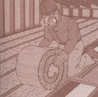 Below rafters, ventilation maintained between rafters |
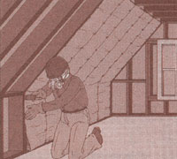 Between rafters, ventilation maintained above insulation |
|
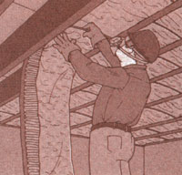 Above rafters ventilation maintained between insulation and roof covering. |
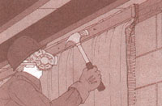 |
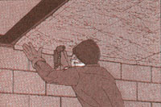 |
|
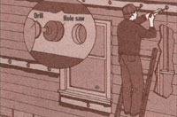 |
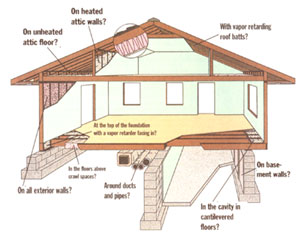 |
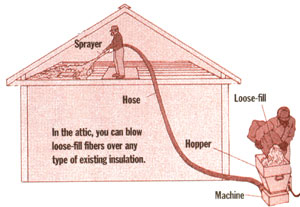 |
|
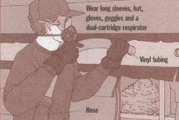 |
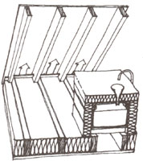 |
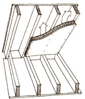 |
|
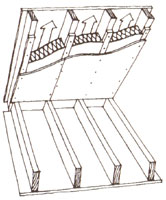 |
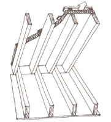 |
|